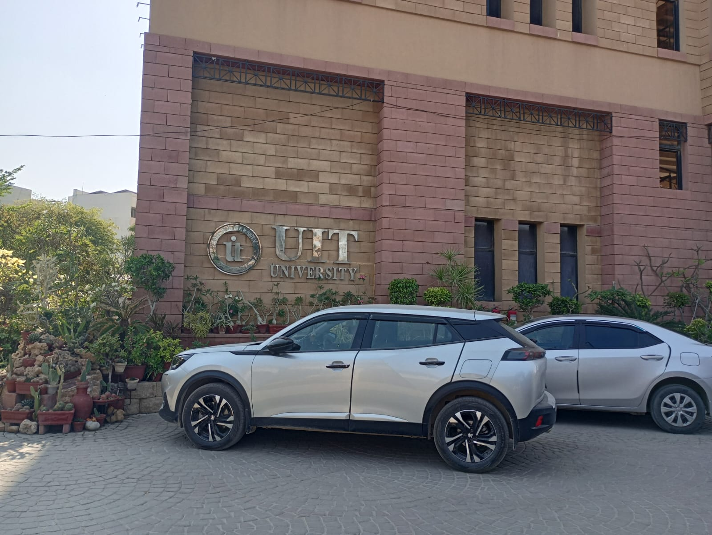

Home
About
Education
Gallery
Contact
Muzammil Ahmed
Education
Little Flower English School, Dubai (KG2 - Grade 1)
The Westminster School, Dubai (Grade 2 - Grade 13) including IGCSE and A level
FAST-NUCES
University of Stirling
Usman Institute of Technology

© 2024 Muzammil Ahmed